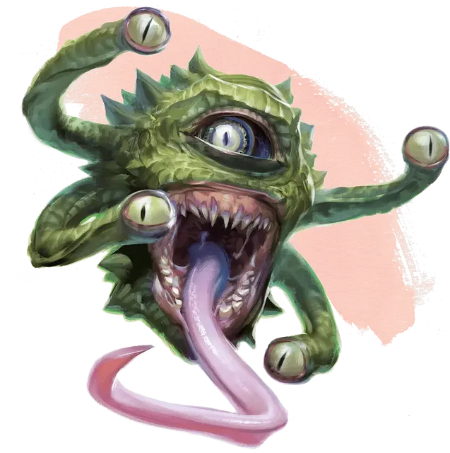

Наблюдатель
Spectator
Средняя Аберрация, законно-нейтральная

Класс Доспеха 14 (природный доспех)
Хиты 39 (6к8 + 12)
Скорость 0 футов, летая 30 футов (парит)
| мод | спас | ||
|---|---|---|---|
| СИЛ | 8 | −1 | −1 |
| ЛОВ | 14 | +2 | +2 |
| ТЕЛ | 14 | +2 | +2 |
| мод | спас | ||
|---|---|---|---|
| ИНТ | 13 | +1 | +1 |
| МДР | 14 | +2 | +2 |
| ХАР | 11 | +0 | +0 |
Навыки Восприятие +6
Иммунитет к состояниям сбивание с ног
Чувства тёмное зрение 120 футов, пассивное Восприятие 16
Языки Глубинная речь, Подземный, Телепатия 120 фт.
Опасность 3 (700 опыта)
Бонус мастерства +2
Среда обитания Подземье
Особенности
Парение. Наблюдатель способен парить до тех пор, пока он жив.
Действия
Укус. Рукопашная атака оружием: +1 к попаданию, досягаемость 5 футов, одна цель. Попадание: Колющий урон 2 (1к6 − 1).
Лучи из глаз. Наблюдатель испускает один или два магических луча из глаз в одно или два существа, видимых в пределах 90 футов. Каждый луч используется только один раз в ход.
• Луч замешательства. Цель должна преуспеть в спасброске Мудрости Сл 13, иначе она не сможет использовать реакции до конца своего следующего хода. Во время своего хода цель не может перемещаться, и обязана действием совершить рукопашную или дальнобойную атаку по случайному существу в пределах досягаемости. Если цель не может атаковать, она в своем ходу ничего не делает.
• Парализующий луч. Цель должна преуспеть в спасброске Телосложения Сл 13, иначе станет парализованной на 1 минуту. Цель может повторять этот спасбросок в конце каждого своего хода, оканчивая эффект на себе при успехе.
• Луч страха. Цель должна преуспеть в спасброске Мудрости Сл 13, иначе станет испуганной на 1 минуту. Цель может повторять этот спасбросок в конце каждого своего хода, с помехой, если наблюдатель ей виден, оканчивая эффект на себе при успехе.
• Ранящий луч. Цель должна совершить спасбросок Телосложения Сл 13, получая урон некротической энергией 16 (3к10) при провале, или половину этого урона при успехе.
Создание еды и воды. Наблюдатель магическим образом создает достаточное количество пищи и воды, чтобы поддерживать себя в течение 24 часов.
Реакции
Отражение заклинаний. Если наблюдатель совершает успешный спасбросок от заклинания, или атака заклинанием промахивается по нему, наблюдатель может выбрать другое существо (включая самого заклинателя), видимое в пределах 30 футов. Заклинание нацеливается на выбранное существо вместо наблюдателя. Если заклинание заставляет совершить спасбросок, его совершает выбранное существо. Если у заклинания есть атака, бросок атаки перебрасывается по выбранному существу.
Описание
Наблюдатель - это малый бехолдер, который призван магическим ритуалом из другого плана существования. Компоненты этого ритуала включают четыре глаза на стебельках бехолдера. Соответственно, у наблюдателя есть четыре глаза, расположенные парами с каждой стороны от широкого глаза в центре его четырехфутового шаровидного тела.
Магический страж. Призванный наблюдатель охраняет местность или сокровища по выбору того, кто его призвал, на протяжении 101 года, не позволяя никому, кроме призывателя, заходить в эту зону или получать доступ к сокровищам, при условии, что призыватель не приказал обратного. Если вещь похищена или уничтожена до срока, призванный наблюдатель исчезает. В любом другом случае он никогда не оставит своего поста.
Проблески безумия. Несмотря на то, что наблюдатель умеет говорить, он предпочитает общаться телепатически. Пока он на страже, он вежлив, свободно говорит о своих приказах и своем призывателе. Тем не менее, даже короткого разговора с наблюдателем хватит, чтобы понять причуды его личности, вызванные долгими годами изоляции. Он может придумать воображаемых врагов, говорить о себе в третьем лице или пытаться подражать голосу своего призывателя.
Как и любой бехолдер, наблюдатель считает себя воплощением всего своего рода и люто ненавидит других наблюдателей. Если два наблюдателя сталкиваются, они почти всегда сражаются до смерти.
Освобождение от службы. Когда наблюдатель заканчивает свою службу, он предоставляется сам себе. Многие поселяются в тех же местах, которые охраняли, особенно если их призыватели умерли. С потерей цели, безумие наблюдателя, лишь мелькавшее во время его службы, проявляется в полной мере.